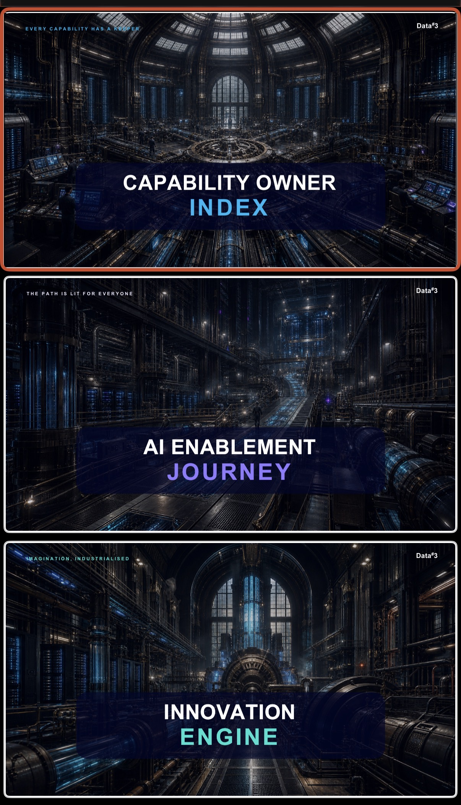

Every capability has a keeper
Capability Owner Index
Make ownership visible. Connect every capability to the people, offerings and expertise that bring it to life.
North Star
Win more of the market, and run it leaner.
Each workstream turns executive intent into named ownership, capability-building, and governed delivery.
03 executive-mandated workstreams

Every capability has a keeper
Make ownership visible. Connect every capability to the people, offerings and expertise that bring it to life.
The path is lit for everyone
Give every person a clear, supported path from first curiosity to confident, repeatable AI practice.
Imagination, industrialised
Turn promising ideas into governed, saleable outcomes through a repeatable innovation system.
One executive agenda
Ownership makes accountability visible. Enablement builds capability. Innovation turns priority into governed outcomes.
Next: operationalise each workstream →